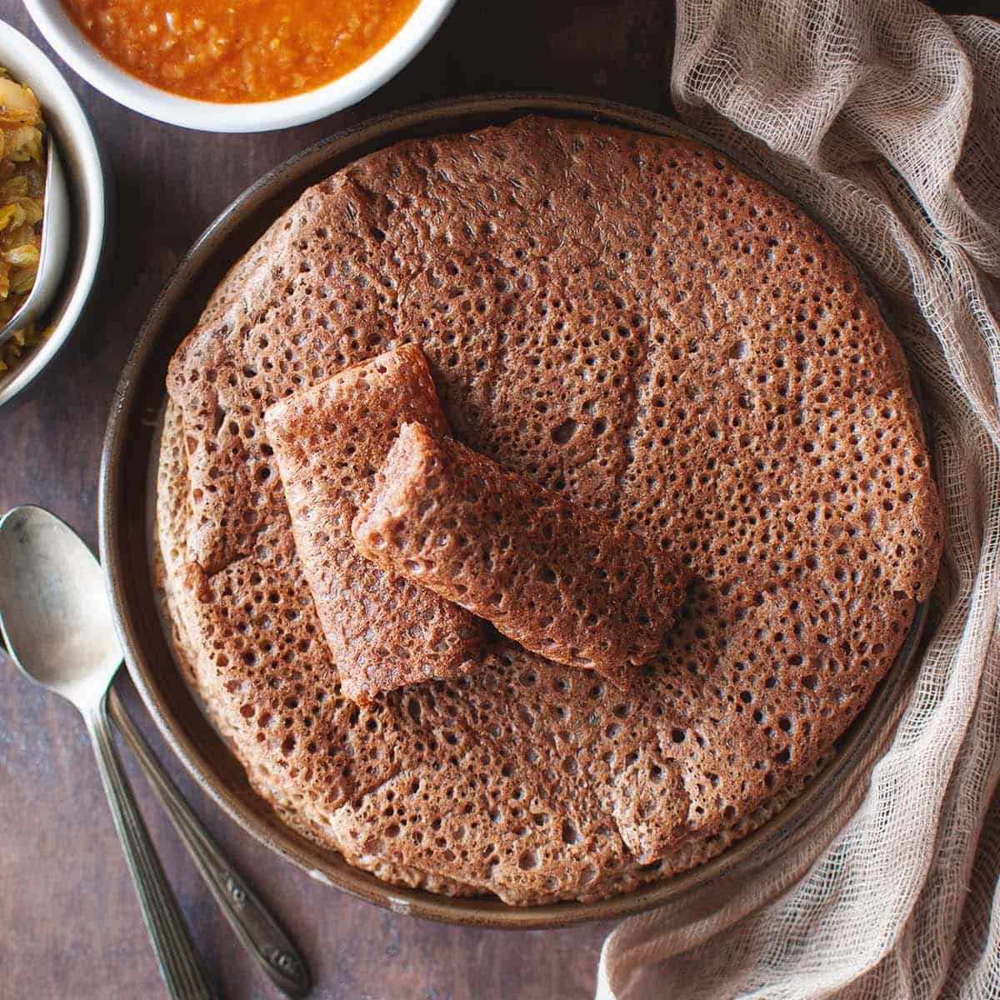

Injera

Description
Injera is a soft, spongy Ethiopian flatbread made from fermented teff flour, giving it a slightly sour taste.
Its porous texture soaks up sauces, making it perfect for eating with stews and lentils.
Often used as both a base and utensil, injera is essential in Ethiopian meals.
Ingredients
Steps
- Mix teff flour, water, and a pinch of salt, and let the batter ferment for 1-3 days.
- Heat a non-stick skillet over medium heat.
- Pour a thin layer of batter onto the skillet and cook until bubbles form and the top is set.
- Remove from the pan and let it cool before serving with stews or curries.